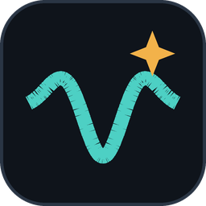

Alege un punct de pe hartă
Fiecare punct colorat este un pulsar sau o stea pe care o poți asculta.

Alege ceva de pe cer, ascultă și privește cum arată sunetul.
Vorbește, cântă, fluieră sau bate din palme și privește ce apare în dreapta.
Browserul îți va cere voie să folosească microfonul. Sunetul nu este trimis nicăieri.
Fiecare punct colorat este un pulsar sau o stea pe care o poți asculta.
Semnalele sunt sintetizate din valori măsurate și publicate (frecvențele de rotație ale pulsarilor, vibrațiile stelelor, anii planetelor). Nu sunt înregistrări de radiotelescop. «Mesajul din Contact» este ficțiune, din filmul din 1997.